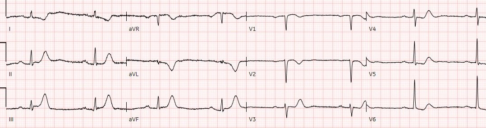
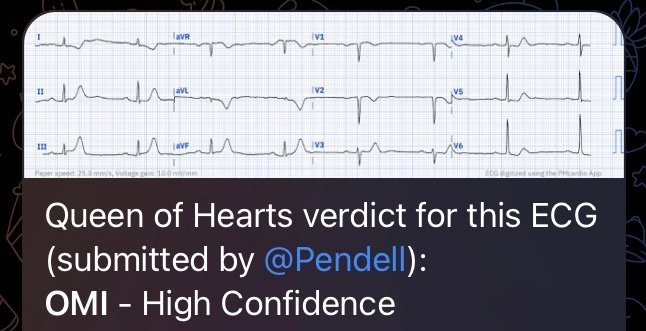
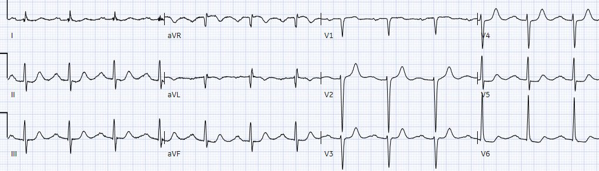
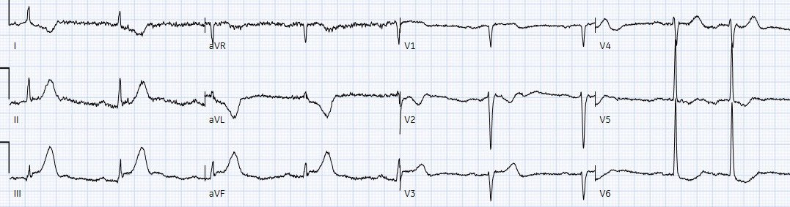
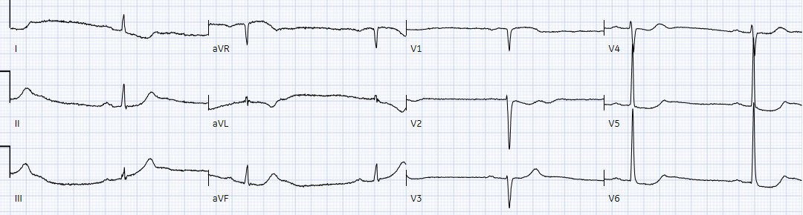
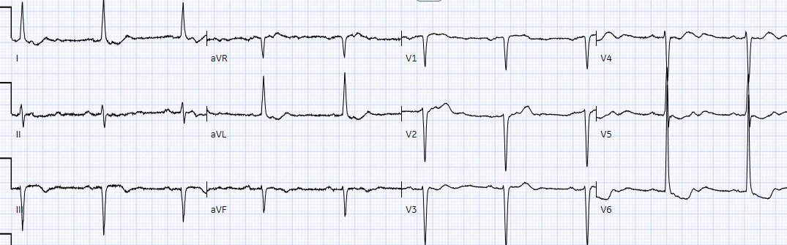
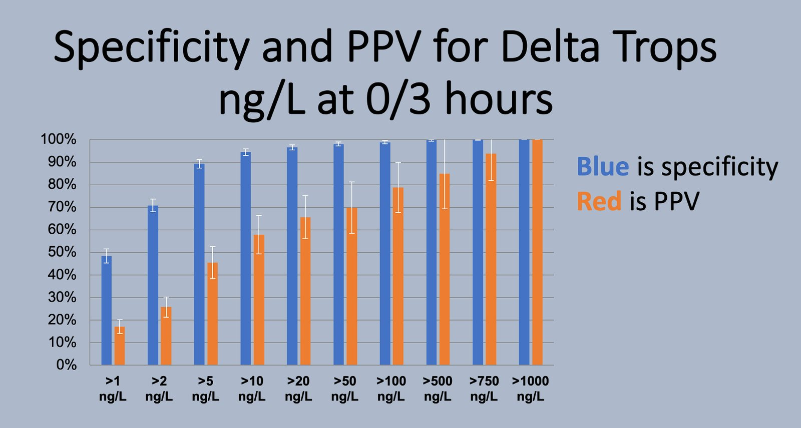
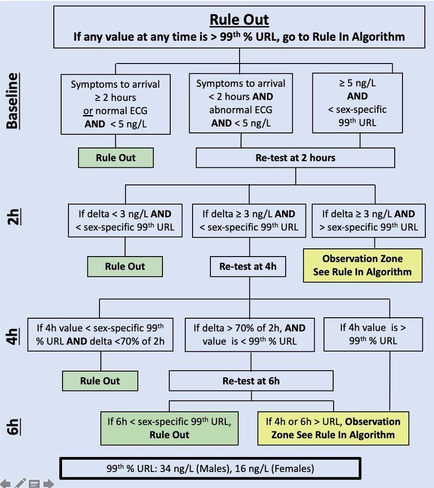
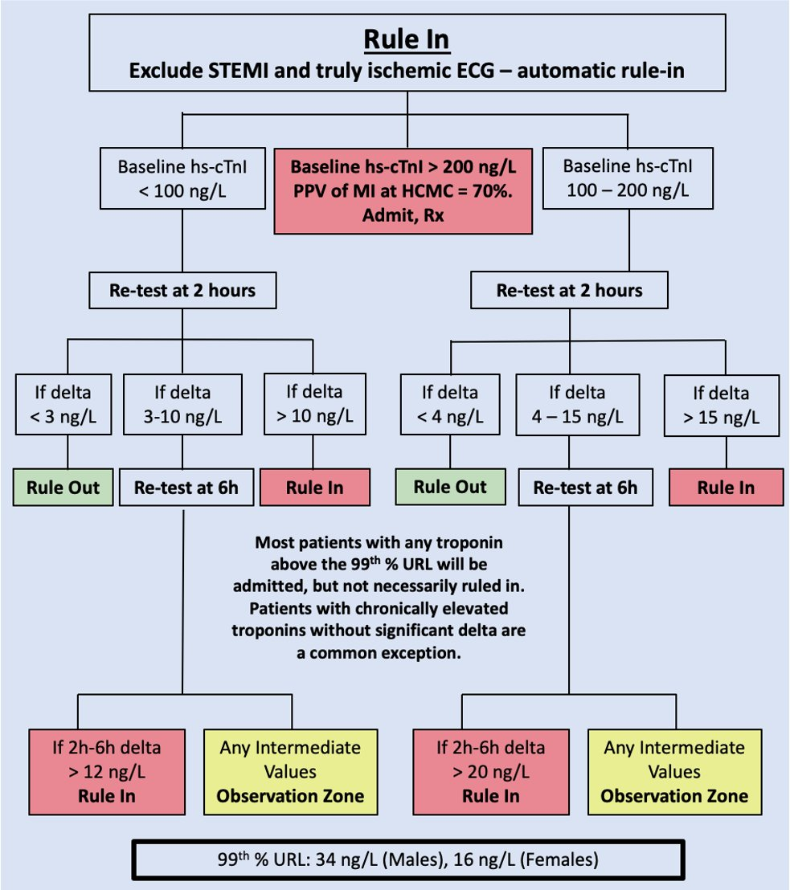
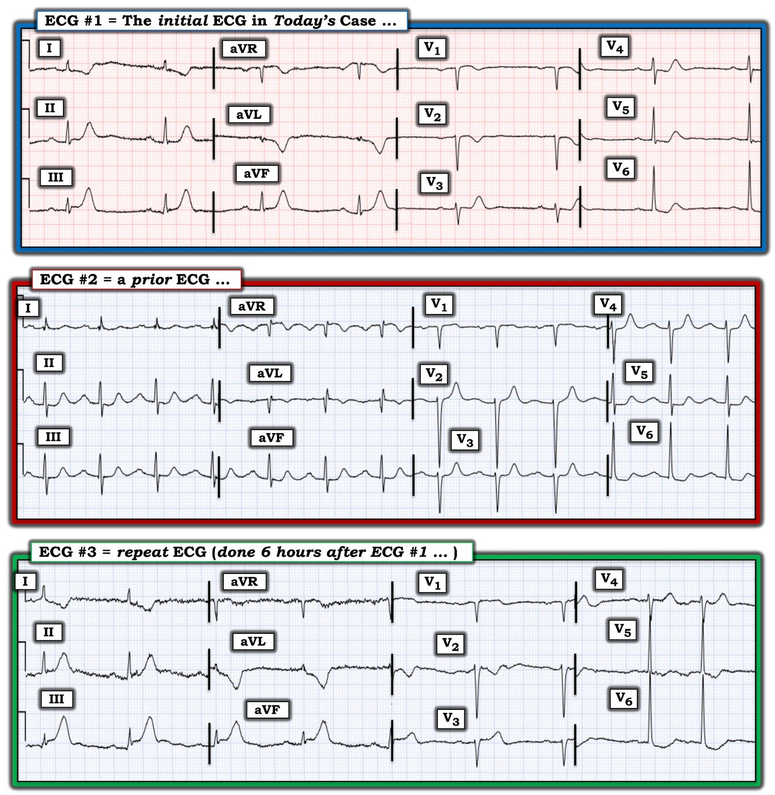

24/03/2023 — Bệnh nhân 85 tuổi đau ngực, STEMI âm tính, rồi troponin bình thường nhưng delta khá lớn: cho ra viện?
Bản dịch tiếng Việt của bài "85 year old with chest pain, STEMI negative, then normal troponin but with relatively large delta: discharge?" – Dr. Smith’s ECG Blog. Giữ nguyên toàn bộ 11 hình ảnh của bản gốc.
Bài viết của Jesse McLaren, kèm bình luận của Smith.
Một bệnh nhân 85 tuổi có tiền sử bệnh động mạch vành (CAD) đến viện vì đau ngực 3 giờ
cảm giác như ợ nóng nhưng lan ra cánh tay trái.
Dưới đây là điện tâm đồ. Bạn nghĩ gì?


= = =
Về điện tâm đồ ban đầu này — có nhịp chậm xoang, blốc AV độ một, trục bình thường, tăng tiến sóng R chậm và điện thế bình thường. Có ST chênh lên dạng lõm rất nhẹ ở III, không đạt tiêu chuẩn STEMI, nên điện tâm đồ này “STEMI âm tính”. Nhưng có nhiều bất thường khác mà khi kết hợp lại thì chẩn đoán OMI và gợi ý tắc RCA:
- Nhịp chậm xoang, thường gặp trong tắc RCA.
- Sóng T tối cấp ở thành dưới (đáy rộng, đối xứng, cao so với QRS).
- ST chênh xuống và sóng T đảo ngược soi gương ở aVL (và I), rất đặc hiệu cho OMI thành dưới.
- ST chênh xuống nguyên phát ở thành trước, là OMI thành sau cho đến khi chứng minh được điều ngược lại.
= = =
Đây là kết quả đọc của AI PMcardio được huấn luyện để nhận diện OMI:


= = =
Dưới đây là điện tâm đồ cũ:


Điện tâm đồ cũ cho thấy blốc AV độ một, tăng tiến sóng R chậm và một phần ST chênh xuống ở chuyển đạo trước tim là cũ, nhất là ở các chuyển đạo bên. Nhưng nhịp chậm và OMI dưới-sau chắc chắn là mới:
Smith: Điện tâm đồ cũ cũng có nhiều bất thường gợi ý thiếu máu cục bộ: nhiều chuyển đạo có ST chênh xuống trông như do thiếu máu cục bộ.
= = =
Bác sĩ cấp cứu đã làm theo các bước tuần tự của mô hình STEMI hiện hành:
1. Dùng tiêu chuẩn STEMI để nhận diện tắc mạch vành cấp: điện tâm đồ STEMI âm tính.
2. Dùng troponin để loại trừ nhồi máu cơ tim không ST chênh lên (non-STEMI): 2 xét nghiệm troponin I độ nhạy cao cách nhau hai giờ cho kết quả 4 và 16 ng/L — cả hai đều nằm trong giới hạn bình thường (giới hạn trên bình thường là 16 ở nữ và 26 ở nam). Xét nghiệm dùng là Abbott Alinity, rất giống với troponin I độ nhạy cao Abbott Architect. Xem phân tích bên dưới.
3. Sắp xếp theo dõi cho bệnh nhân đau ngực “STEMI âm tính” với “troponin bình thường”: bệnh nhân được chuyển khám tim mạch ngoại trú.
= = =
Nhưng 6 giờ sau bệnh nhân quay lại vì đau ngực tái phát:


Một lần nữa — điện tâm đồ ghi lại này, làm 6 giờ sau điện tâm đồ ban đầu, chẩn đoán OMI dưới-sau — dù lần này nó đạt tiêu chuẩn STEMI, tuy chỉ vừa đủ. Phòng thông tim (cath lab) được kích hoạt.
= = =
Một điện tâm đồ ghi lại được làm trên đường tới phòng thông tim:


Lại “STEMI âm tính”. Sóng T tối cấp đang xẹp xuống, gợi ý tái tưới máu, nhưng vẫn còn thay đổi soi gương ở I/aVL và ST chênh xuống ở V2 — và nhịp chậm nặng hơn.
- Chụp mạch vành thấy RCA tắc 90%.
- Troponin tăng từ 600 lên 17,000 ng/L.
= = =
Kết luận ca bệnh:
Điện tâm đồ lúc ra viện cho thấy hết nhịp chậm, sóng T đảo ngược tái tưới máu ở thành dưới, và ST chênh xuống nền ở chuyển đạo trước tim.


= = =
Điều cần nhớ:
1. Như đồng thuận mới của ACC nêu (có trích dẫn công trình của Smith/Meyers), “Chỉ áp dụng tiêu chuẩn STEMI trên điện tâm đồ 12 chuyển đạo chuẩn
sẽ bỏ sót một thiểu số đáng kể bệnh nhân bị tắc
mạch vành cấp. Vì vậy, cần xem xét kỹ điện tâm đồ để tìm những thay đổi tinh tế có thể là dấu hiệu điện tâm đồ ban đầu của tắc mạch, như sóng T tối cấp — hoặc đoạn ST chênh lên <1 mm, đặc biệt
khi đi kèm đoạn ST chênh xuống soi gương, vì điều này có thể
phản ánh dòng chảy mạch vành bất thường và/hoặc tắc mạch.”
2. Dùng troponin cho tắc mạch vành cấp giống như dựa vào gương chiếu hậu để lái xe qua một vụ tai nạn liên hoàn: nó cho thấy đống đổ nát phía sau bạn đã xảy ra rồi, nhưng không nhìn thấy con đường phía trước và có thể tạo cảm giác yên tâm giả khi một vụ va chạm trực diện đang xảy ra theo thời gian thực. Tắc mạch vành cấp biểu hiện với troponin trong giới hạn bình thường là thường gặp, và mức tăng ban đầu không thể tiên đoán tổn thương cuối cùng. Ngay cả khi troponin ở lần khám đầu cao hơn thì vẫn sẽ chậm tái tưới máu vì ca này sẽ được chẩn đoán là “non-STEMI”.
3. Dùng các công cụ phân tầng nguy cơ như HEARTS hoặc EDACS có thể đã tránh được lần cho ra viện đầu tiên, nhưng không nên dùng nếu điện tâm đồ đã chẩn đoán OMI. (Xem bài khác này: Chest pain, a ‘normal ECG’ a ‘normal trop’, and low HEART and EDACS score: discharge home? Stress test? Many errors here — Đau ngực, “điện tâm đồ bình thường”, “troponin bình thường”, điểm HEART và EDACS thấp: cho về nhà? Nghiệm pháp gắng sức? Nhiều sai lầm ở đây.)
4. Dựa vào troponin trong giới hạn bình thường nhưng trên ngưỡng phát hiện cũng có nguy cơ. Như nghiên cứu này của Dr. Smith kết luận: “nồng độ hs-cTnI đo được nhưng nhỏ hơn hoặc bằng URL theo giới có ý nghĩa tiên lượng quan trọng. Kết quả của chúng tôi nhấn mạnh tầm quan trọng của việc nhìn nhận cTn là một biến liên tục, cTn càng cao thì xác suất biến cố tim mạch chính (MACE) càng cao. Chúng tôi khuyến cáo không dùng các thuật ngữ bình thường hoặc âm tính trên lâm sàng ở những bệnh nhân này.” (Clinical
features and outcomes of emergency department patients with high-sensitivity cardiac Troponin I concentrations within sex-specific reference intervals — Đặc điểm lâm sàng và kết cục của bệnh nhân khoa cấp cứu có nồng độ troponin I tim độ nhạy cao nằm trong khoảng tham chiếu theo giới.)
= = =
Smith bình luận về troponin:
Tôi đã nghiên cứu rất nhiều về troponin độ nhạy cao, cùng các đồng nghiệp trong đó có Fred Apple và Yader Sandoval. Chúng tôi đã công bố hơn 30 bài báo, phần lớn về troponin độ nhạy cao, chủ yếu là troponin I độ nhạy cao Abbott Architect. Chúng tôi nhận thấy rằng, để loại trừ nhồi máu cơ tim (và chúng tôi chủ yếu chỉ nghiên cứu Non-OMI), delta sau 2-3 giờ phải nhỏ hơn 3 ng/L. Điều này phù hợp với nhiều nghiên cứu khác của nhóm HIGH-STEACS ở Scotland và các nhóm khác. Trong ca này, delta là 12 ng/L.
Delta 12 ng/L rất có khả năng chỉ ra nhồi máu cơ tim cấp, ngay cả khi giá trị dưới bách phân vị thứ 99. Sao lại như vậy được? Vì troponin lần thứ 3 hoặc thứ 4 rất có khả năng sẽ CAO HƠN bách phân vị thứ 99 nếu giá trị lúc 3 giờ đã tăng từ 4 lên 16 ng/L.
Xem hình minh họa này từ một trong các bài báo của chúng tôi:



Giá trị tiên đoán dương (PPV) đặc biệt thấp so với độ đặc hiệu vì đây là một quần thể nguy cơ rất thấp. Trong tình huống nguy cơ cao, PPV sẽ rất cao.
- Lưu ý rằng các delta này áp dụng BẤT KỂ giá trị ban đầu là bao nhiêu. Nhưng nếu giá trị ban đầu rất thấp, như trong ca này, thì delta 12 ở giai đoạn sớm của đau ngực càng có ý nghĩa hơn.
Kết luận:
- Bệnh nhân này lẽ ra không bao giờ được loại trừ bằng troponin.
- Và các dấu hiệu trên điện tâm đồ, vốn chẩn đoán OMI, cũng đã bị bỏ sót.
- Vì vậy, đây là phác đồ mà Fred Apple và tôi đã xây dựng cho Hennepin dành cho Abbott Architect:




= = =
======================================
BÌNH LUẬN CỦA TÔI, bởi KEN GRAUER, MD (24/3/2023 — Cập nhật cho WordPress ngày 18/2/2026):
Tôi thích ca này của Dr. McLaren — vì nó cho phép chúng ta nhấn mạnh một khiếm khuyết rất quan trọng của mô hình STEMI lỗi thời mà quá thường xuyên bị lãng quên — đó là, Hãy chắc chắn ghi và đối chiếu lâm sàng ít nhất 2 điện tâm đồ liên tiếp trước khi cho bệnh nhân về nhà! (với “đối chiếu lâm sàng” nghĩa là so sánh từng chuyển đạo giữa các điện tâm đồ liên tiếp này — đồng thời lưu ý có hay không và mức độ nặng tương đối của đau ngực tại thời điểm ghi mỗi điện tâm đồ).
- Để dễ so sánh, trong Hình 1 — tôi đã đặt lại 3 điện tâm đồ đầu tiên được ghi trong ca hôm nay.
Khi xem lại diễn biến trong ca hôm nay — việc ghi điện tâm đồ thứ 2 và đối chiếu lâm sàng mức độ nặng của triệu chứng với từng điện tâm đồ được ghi trước khi cho bệnh nhân ra viện rõ ràng đã không được thực hiện ở lần thứ 1 bệnh nhân đến khoa cấp cứu (Emergency Department, ED). Tôi nói vậy vì:
- Xét việc bệnh nhân hôm nay đến viện vì mới đau ngực (CP — Chest Pain) — thì điện tâm đồ ban đầu đã chẩn đoán một biến cố cấp cho đến khi chứng minh được điều ngược lại.
- Như Dr. McLaren đã nêu, so với bản ghi trước — có một số thay đổi ST-T mới ở điện tâm đồ #1.
- Không có ghi chép nào về việc bệnh nhân còn đau ngực tại thời điểm ghi điện tâm đồ #1 hay không (và nếu còn, thì đau ngực đang tăng, giữ nguyên hay giảm). Không có thông tin này — không thể biết các thay đổi ST-T trông có vẻ cấp tính ở điện tâm đồ #1 có thể chỉ ra tắc mạch cấp đang diễn ra hay tái tưới máu tự phát hay tắc lại tự phát.
- Ngoài các sai sót nói trên — delta troponin (tức là mức tăng troponin từ 4 lên 16 ng/L) vốn được diễn giải là “âm tính” — không phải là một kết quả “bình thường” (như Dr. Smith đã phân tích chi tiết). Vì vậy, ngay cả khi không có các thay đổi điện tâm đồ cấp tính thấy trong ca này — bệnh nhân vẫn cần được đánh giá đầy đủ.
= = =
Những khía cạnh thử thách của ca hôm nay:
Có lẽ khía cạnh thử thách nhất của ca hôm nay — là biết CÁCH diễn giải điện tâm đồ ban đầu khi bản ghi trước đó đã có những bất thường điện tâm đồ rõ ràng. Giải quyết vấn đề này đặt ra câu hỏi làm thế nào để so sánh các bản ghi liên tiếp một cách tối ưu.
Về so sánh các điện tâm đồ liên tiếp:
- Tôi thích chọn một trong 2 bản ghi đang so sánh — và diễn giải bản ghi đó một cách hệ thống và trọn vẹn trước khi nhìn sang bản ghi thứ 2.
- Khi so sánh bản ghi hiện tại với một điện tâm đồ cũ — lý tưởng là chúng ta nên biết hoàn cảnh lúc ghi bản ghi trước đó (tức là Bệnh nhân khi đó ổn định và không có triệu chứng? — hay — Bản ghi trước được ghi trong lúc đau ngực hoặc ngay sau một cơn nhồi máu?). Đáng tiếc — chúng ta không biết hoàn cảnh lúc ghi bản ghi trước trong ca hôm nay.
- Các thông số điện tâm đồ ở 2 bản ghi đang so sánh có tương tự nhau không? (tức là Có thay đổi trục mặt phẳng trán không? Tăng tiến sóng R có tương tự không? Tần số tim và nhịp ở 2 bản ghi có giống nhau không?). Thay đổi đáng kể ở bất kỳ thông số nào trong số này đều có thể gây ra thay đổi ST-T không phải do thiếu máu cục bộ hay nhồi máu.
So sánh 3 bản ghi trong Hình 1:
Điện tâm đồ đầu tiên chúng ta được xem trong ca hôm nay là điện tâm đồ #1:
- Như Dr. McLaren đã nêu — có nhịp chậm xoang rõ rệt kèm loạn nhịp xoang (tức là tần số tim chỉ khoảng hơn 40 nhịp/phút) — với blốc AV độ 1 (khoảng PR ~0.23 giây).
- Về các khoảng khác — QRS hẹp — và QTc có lẽ bình thường khi xét tần số chậm. Trục mặt phẳng trán bình thường (khoảng +70 độ). Không có lớn buồng tim.
Về thay đổi Q–R–S–T: Có các gợn sóng do nhiễu ở đường nền của điện tâm đồ #1 — nhưng điều này không cản trở việc diễn giải bản ghi.
- Không có sóng Q đáng kể (tức là Phức bộ QS ở chuyển đạo V1 tự nó không bất thường). Có thấy một sóng r khởi đầu nhỏ xíu nhưng có hiện diện ở chuyển đạo V2 — với sóng R này tăng dần qua các chuyển đạo trước tim. Vùng chuyển tiếp (nơi sóng R trở nên cao hơn độ sâu của sóng S) — hơi muộn (ở giữa chuyển đạo V3 đến V5).
- Đoạn ST thẳng đuỗn ở nhiều chuyển đạo. Ở các chuyển đạo dưới, điều này đi kèm điểm J chênh lên nhẹ và sóng T tối cấp rõ ràng (cao không tương xứng, “béo” ở đỉnh — và rộng hơn dự kiến ở đáy).
- Thay đổi soi gương (tức là hình ảnh ST-T đối ngược như ảnh trong gương) — thấy ở chuyển đạo aVL, và ở mức độ ít hơn ở chuyển đạo I. Xét biên độ QRS nhỏ xíu như thế nào ở các chuyển đạo bên cao này — đây phải được xem là thay đổi cấp tính cho đến khi chứng minh được điều ngược lại!
- Ở các chuyển đạo ngực — thay đổi ST-T cũng đáng lo ngại không kém. Có đoạn ST dạng vòm (coving) kèm sóng T đảo ngược ở chuyển đạo V1,V2. Chúng ta thấy đoạn ST thẳng đuỗn rõ rệt kèm dốc xuống ở chuyển đạo V3-đến-V6. Theo sau là phần cuối sóng T dương ở các chuyển đạo này — với sóng T ở chuyển đạo V3,V4,V5 rõ ràng “quá đầy đặn” (hypervoluminous) (“béo” ở đỉnh và rộng ở đáy hơn mức bình thường — đồng thời cao không tương xứng ở chuyển đạo V3,V4 khi xét biên độ sóng R ở các chuyển đạo này).
- NHẬN ĐỊNH về điện tâm đồ #1: Như Dr. McLaren đã nêu — Đặc biệt khi xét nhịp chậm rõ rệt, các dấu hiệu điện tâm đồ trên chẩn đoán OMI dưới-sau cấp cho đến khi chứng minh được điều ngược lại! Đoạn ST dạng vòm ở chuyển đạo V1,V2 gợi ý có thể có tổn thương thất phải (RV) cấp — với tắc cấp RCA là động mạch “thủ phạm” được giả định. Với bệnh sử đau ngực mới — chỉ định thông tim ngay là rõ ràng dựa trên điện tâm đồ ban đầu này.
= = =
So sánh điện tâm đồ #1 với bản ghi trước đó:
Như đã đề cập trước đó — điện tâm đồ #2 không phải là một bản ghi bình thường. Thay vào đó — có đoạn ST thẳng đuỗn ở nhiều chuyển đạo, đôi khi kèm ST chênh xuống nhẹ. Sóng T trông lớn không tương xứng ở một số chuyển đạo (có thể là tối cấp NẾU bệnh nhân khi đó đang có đau ngực mới). Có đoạn ST dạng vòm kèm sóng T đảo ngược nông ở chuyển đạo aVL.
- Một số khác biệt về thông số điện tâm đồ khiến việc so sánh điện tâm đồ #1 với điện tâm đồ #2 trở nên khó khăn. Bao gồm: i) Tần số tim nhanh hơn nhiều ở bản ghi trước; — và, ii) Trục mặt phẳng trán ít thay đổi — nhưng biên độ QRS rõ ràng tăng hơn ở bản ghi trước.
Trước hết xem các chuyển đạo chi:
- Mặc dù đoạn ST thẳng đuỗn không phải là dấu hiệu mới ở điện tâm đồ #1 — không nên nghi ngờ gì rằng ST chênh lên tinh tế ở chuyển đạo III và aVF là thật — vì nếu có gì thì trên bản ghi trước còn có ST chênh xuống nhẹ ở các chuyển đạo này. Tương tự, hình ảnh sóng T tối cấp ở các chuyển đạo dưới này tăng lên rõ rệt ở điện tâm đồ #1.
- ST-T chênh xuống soi gương kèm sóng T đảo ngược cũng rõ rệt hơn hẳn ở chuyển đạo I và aVL của điện tâm đồ #1.
Ở các chuyển đạo ngực:
- Mặc dù đoạn ST thẳng đuỗn kèm sóng T nổi bật đã có ở bản ghi trước — so sánh từng chuyển đạo cho thấy sóng T ở chuyển đạo V3-đến-V6 ở điện tâm đồ #1 cao hơn một cách tương đối (khi xét biên độ QRS ở từng chuyển đạo tương ứng) — và chắc chắn “béo” ở đỉnh và rộng ở đáy hơn (tức là tối cấp hơn) so với ở bản ghi trước đó.
- NHẬN ĐỊNH: Ở bệnh nhân 85 tuổi có đau ngực mới này — so sánh bản ghi trước đó với điện tâm đồ #1 phải xóa bỏ mọi nghi ngờ về tính cấp tính của các thay đổi điện tâm đồ trên bản ghi ban đầu này. Chỉ định thông tim ngay là rõ ràng — đặc biệt khi xét nhịp chậm đáng lo ngại ở điện tâm đồ #1. Lẽ ra không được cho bệnh nhân về nhà.
= = =
Điện tâm đồ ghi lại:
Như Dr. McLaren đã nêu — đáng tiếc là bệnh nhân đã được cho ra viện từ khoa cấp cứu — nhưng quay lại 6 giờ sau vì đau ngực tái phát. Tiêu chuẩn STEMI dựa trên milimét cuối cùng cũng đạt.
- So sánh điện tâm đồ #3 với điện tâm đồ ban đầu ghi 6 giờ trước đó — và với bản ghi “nền” (trước đó), giúp hiểu rõ trình tự thay đổi điện tâm đồ tương ứng với triệu chứng của bệnh nhân.
- Giờ đây có ST chênh lên rõ ràng ở cả 3 chuyển đạo dưới trên điện tâm đồ #3 — đi kèm biến dạng phần cuối QRS (T-QRS-D) (Terminal-QRS-Distortion — vì sóng S ở chuyển đạo III và aVF đã bị nâng lên khỏi đường nền) + kích thước tương đối của sóng T tối cấp thành dưới còn tăng nhiều hơn nữa (Sóng T ở chuyển đạo III và aVF giờ cao vượt hẳn sóng R ở các chuyển đạo này — trong khi ở điện tâm đồ #1 chúng cao xấp xỉ sóng R).
- ST-T chênh xuống/sóng T đảo ngược soi gương ở các chuyển đạo bên cao I và aVL đã tăng tương ứng với mức ST chênh lên ở chuyển đạo dưới.
- Ngược lại — thay đổi ST-T trông kém nổi bật hơn ở điện tâm đồ #3 so với ở bản ghi ban đầu. Diễn tiến của các thay đổi điện tâm đồ liên tiếp trong một biến cố cấp đang diễn ra không phải lúc nào cũng đồng nhất.
= = =
Hình 1: So sánh giữa điện tâm đồ ban đầu trong ca hôm nay — với một bản ghi trước đó — và với điện tâm đồ ghi lại (ghi 6 giờ sau điện tâm đồ #1).


= = =
= = =
= = =